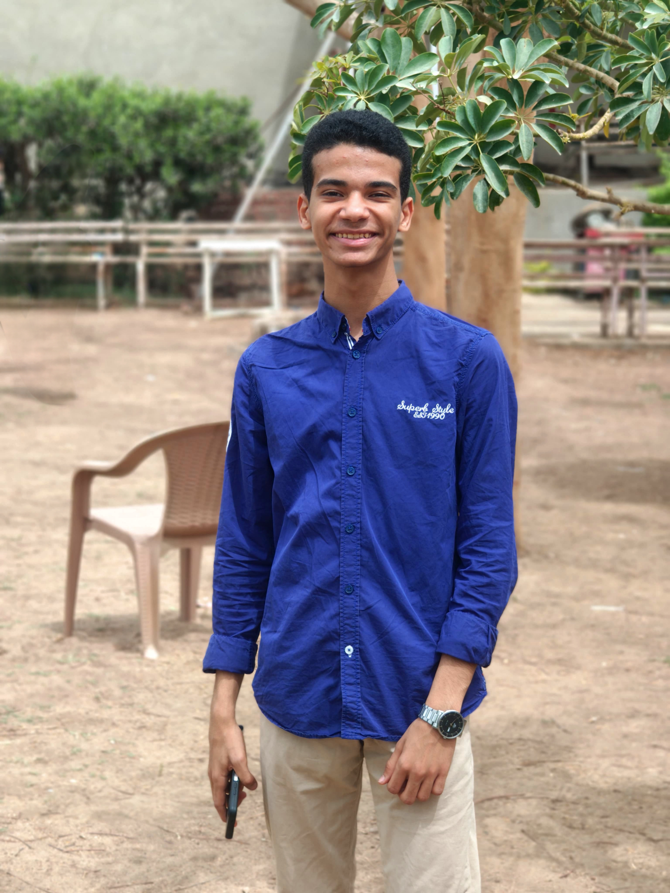

My Profile
Philopateer Fahim is a curious Egyptian student who blends faith, technology, and gaming interests,
constantly seeking practical knowledge and smarter ways to learn, build, and grow in everyday life situations.